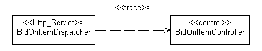

|
工作产品：分析类表示设计元素实例扮演的角色；可以使用一个或多个设计模型元素实现这些角色。另外，单个设计元素可以实现多个角色。以下资料讨论了实现分析角色的方法：
-
分析类可以成为设计模型中的单个设计类。
-
分析类可以成为设计模型中的设计类的一部分。
-
分析类可以成为设计模型中的聚集设计类。（表示不能将该聚集中的部件显式建模为分析类）。
-
分析类可以成为从设计模型中的相同类继承的一组设计类。
-
分析类可以成为设计模型中的一组功能相关的设计类。
-
分析类可以成为设计模型中的设计子系统。
-
分析类可以成为设计子系统的部件，例如一个或多个接口以及它们的对应实施。
-
分析类可以成为设计模型中的关系。
-
分析类之间的关系可以成为设计模型中的设计类。
-
分析类主要处理功能需求并对来自“问题”域的对象建模；设计类处理非功能需求并对来自“解决方案”域的对象建模。
-
可以使用分析类来表示“希望系统支持的对象”，而无需决定用硬件支持分析类的多少部分，用软件支持分析类的多少部分。因此，可以使用硬件实现部分分析类，而根本不在设计模型中对分析类进行建模。
以上各项的任意组合都是可以的。
如果维护单独的分析模型，请确保维护从已确定的设计元素到它们对应的分析类的可跟踪性。关于更多信息，请参阅映射到分析模型。
本节仅适用于维护单独分析模型的情况。
设计期间，将确定支持与体系结构和所选技术更紧密地保持一致的设计元素。应将分析模型中的每个分析类与设计模型中至少一个设计类相关联。
为对此可跟踪性建模，应得出从设计元素到它所代表分析类的 <<跟踪>> 依赖关系，如下图中所示：

注意：可跟踪性链接是从设计模型元素到分析模型元素绘制的，以使设计模型依赖于分析模型而不是其他方法。
应在设计开始之前确定设计模型中的类应如何与实施类相关；应在特定于项目的设计指南中描述此信息。
设计模型可能或多或少地与实施模型相近，这依赖于如何将设计模型的类、包和子系统映射到实施模型中的实施类、文件、包和子系统。实施期间，通常将解决与实施环境相关的小策略问题，这些问题不应影响到设计模型。例如，可以在实施期间添加类和子系统以处理并行开发，或调整导入依赖关系。关于更多信息，请参阅任务：构造实施模型以及概念：从设计映射到代码。
从设计模型到实施模型应当有一致的映射。 工作产品：特定于项目的指南应定义此映射，并且应在整个设计模型中应用一致的抽象级别。 工作产品：特定于项目的指南应定义此映射，并且应在整个设计模型中应用一致的抽象级别。
良好设计模型有以下特征：
-
它满足系统需求。
-
它可以适应实施环境中的更改。
-
相对于其他可能的对象模型和系统实施，易于维护。
-
实施方式明确。
-
不包含最好在程序代码中记录的信息。
-
易于适应需求更改。
关于具体特征，请参阅核对表：设计模型。
|